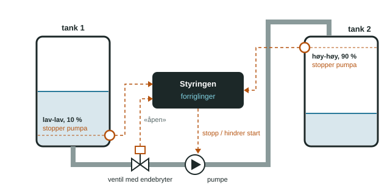

Forriglinger
Noen ting skal aldri skje i et anlegg: at en tank renner over, at en pumpe går tørr, eller at utstyr starter før det er trygt. Forriglinger er automatiske sperrer som hindrer dette. Her lærer du hvordan forriglinger virker, hvorfor de må tilbakestilles, og hvorfor du aldri skal koble dem ut på egen hånd.
Hva er en forrigling?
En forrigling er en automatisk sperre i styringen. Den stopper utstyr eller hindrer en handling når noe er farlig eller galt. Forriglingen gjør dette selv, uten at operatøren trenger å gjøre noe. Den virker også om operatøren prøver å starte utstyret.
Forriglinger finnes i to former:
- Forriglinger som stopper: Utstyr som går, blir stoppet når noe blir farlig. Eksempel: Pumpa stopper når tanken den fyller, er nesten full.
- Startbetingelser: Utstyr får ikke starte før forholdene er trygge. Eksempel: Pumpa får ikke starte før ventilen på sugesiden er åpen.
Et eksempel: pumpe mellom to tanker

Pumpa i figuren har tre forriglinger:
- Lav-lav nivå i tank 1 (10 %, LALL). Tanken pumpa suger fra, er nesten tom. Pumpa stopper, så den ikke går tørr og blir ødelagt.
- Høy-høy nivå i tank 2 (90 %, LAHH). Tanken pumpa fyller, er nesten full. Pumpa stopper, så tanken ikke renner over.
- Ventilen på sugesiden er ikke åpen. Endebryteren melder ikke «åpen». Pumpa får ikke starte, fordi den ville gått uten væske. Stenges ventilen mens pumpa går, stopper pumpa også.
Bokstavene i parentes er navnene du ser i flytskjemaer og alarmlister, for eksempel i HMS-øvingen Overfylling av tank. L står for nivå, A for alarm, og HH og LL for høy-høy og lav-lav.
Mange anlegg har i tillegg en nødstopp, en stor rød knapp som stopper utstyret med en gang når noen trykker på den.
Forriglingsmatrisen
Hvilke forriglinger et anlegg har, står i en forriglingsmatrise. Det er en tabell som viser hvilke hendelser (årsaker) som utløser hvilke automatiske handlinger (virkninger). For pumpa i figuren kan den se slik ut:
| Årsak | Stopper pumpa | Hindrer start | Alarm |
|---|---|---|---|
| Nivå lav-lav i tank 1 | X | X | X |
| Nivå høy-høy i tank 2 | X | X | X |
| Ventil på sugesiden ikke åpen | X | X | |
| Nødstopp trykket inn | X | X | X |
Du leser matrisen rad for rad: Når nivået i tank 2 når høy-høy, stopper pumpa, den kan ikke startes, og det kommer en alarm. Hvordan du leser og tegner en forriglingsmatrise for et helt anlegg, lærer du i temaet Tekniske flytskjemaer.
Forrigling eller vanlig styring?
På siden Av/på-styring stoppet pumpa ved 20 % nivå. Det er vanlig drift: Pumpa stopper der hver gang. Forriglingen ved 10 % skal bare slå inn når noe annet har sviktet, for eksempel når den vanlige stoppen ikke virket. Forskjellen er denne:
| Vanlig styring | Forrigling | |
|---|---|---|
| Når slår den inn? | Hele tiden, som en del av vanlig drift | Bare når noe har gått galt |
| Hva skal den gjøre? | Få prosessen til å gå | Hindre skade på folk, utstyr og miljø |
| Måling | Den vanlige måleren | Helst en egen måler eller bryter |
| Etterpå | Utstyret starter igjen av seg selv | Må tilbakestilles før utstyret kan startes |
Forriglingen bør ha sin egen nivåbryter. Bruker den samme måler som den vanlige styringen, kan én feil på måleren slå ut begge deler på en gang. Det kalles en felles feil.
Lag på lag
Forriglinger er én av flere sikringer som ligger lag på lag. For en tank som fylles, kan lagene være:
- Regulering eller vanlig styring holder nivået der det skal være.
- Høy alarm varsler operatøren, som skal finne årsaken og gripe inn.
- Forriglingen ved høy-høy nivå stopper pumpa automatisk.
- Et overløp leder væsken et trygt sted hvis alt annet svikter.
Forriglinger som skal hindre store ulykker, for eksempel eksplosjon eller store utslipp, ligger ofte i et eget sikkerhetssystem (SIS), atskilt fra den vanlige styringen. Mer om lagene lærer du i HMS, på sidene Overfylling av tank og Barrierer.
Tilbakestilling
Når en forrigling har stoppet utstyret, blir stoppet låst. Selv om nivået i tank 2 synker under 90 % igjen, starter ikke pumpa. Forriglingen må tilbakestilles av en operatør først. Slik er det med vilje: Noen skal finne ut hvorfor forriglingen slo inn, før anlegget startes igjen.
Rekkefølgen er alltid:
- Finn årsaken til at forriglingen slo inn, og rett den.
- Sjekk at forholdene er normale igjen, for eksempel at nivået er under grensen.
- Tilbakestill forriglingen. Det går bare når den farlige tilstanden er borte, for eksempel når nivået er under grensen igjen. Styringen kan ikke se om årsaken er funnet. Det er ditt ansvar.
- Start utstyret på vanlig måte. Tilbakestilling starter ikke utstyret av seg selv.
Forbikobling: bare med tillatelse
Noen ganger må en forrigling kobles ut for en kort tid, for eksempel når en nivåbryter skal byttes eller testes. Det kalles forbikobling. Mens forriglingen er forbikoblet, er sikringen borte, og anlegget er mindre trygt. Derfor gjelder strenge regler:
- Forbikobling krever tillatelse etter bedriftens prosedyre, ofte som en del av arbeidstillatelsen.
- Det skal vises tydelig i styresystemet at forriglingen er forbikoblet.
- Operatøren må følge ekstra godt med så lenge forbikoblingen står.
- Forbikoblingen fjernes så snart arbeidet er ferdig.
En forrigling skal aldri kobles ut for å «få anlegget i gang». Mange alvorlige ulykker har skjedd fordi en sikring var koblet ut.
Feilsikker kobling
Hva skjer hvis ledningen fra nivåbryteren blir revet av? Forriglinger kobles slik at et brudd gir det samme som en farlig tilstand. Signalet betyr «alt er i orden» bare så lenge det er strøm i ledningen. Blir ledningen brutt, eller forsvinner strømmen, stopper pumpa. Dette kalles feilsikker kobling. Du kan lese mer om det på siden PLS.
Tank 2 skal fylles. Du klikker på start for pumpa i skjermbildet, men ingenting skjer. Skjermbildet viser «forrigling aktiv».
Slik tenker du:
- Styringen gjør trolig det den skal. En forrigling hindrer starten. Finn ut hvilken.
- Nivået i tank 1 er 55 %, og nivået i tank 2 er 30 %. Nivåforriglingene skal altså ikke være aktive.
- Styringen viser at ventilen på sugesiden ikke er åpen. Du går ut og ser at ventilen står helt åpen.
- Da er det trolig endebryteren som er feil. Den kan være skadet eller ha flyttet seg, så den ikke melder «åpen».
- Meld fra til automatiker eller elektriker. Ikke forbikoble forriglingen for å få startet pumpa.
Det du lærer: Når utstyr ikke vil starte, sjekker du først hvilke forriglinger og startbetingelser som er aktive. Er forholdene i orden ute i anlegget, er feilen ofte i bryteren som melder dem.
- Koble aldri ut en forrigling uten tillatelse etter bedriftens prosedyre.
- Tilbakestill ikke en forrigling før du vet hvorfor den slo inn.
- En forrigling er ikke en sikring når du skal arbeide på utstyret. Skal du arbeide på en pumpe, må den sikres med arbeidsbryteren og låses etter bedriftens prosedyre.
- Kommer den samme forriglingen igjen og igjen, er det et tegn på at noe er galt. Meld fra.
Test deg selv
Hva er en forrigling?
- En alarm som ber operatøren stoppe utstyret
- En automatisk sperre som stopper utstyr eller hindrer en handling når noe er farlig
- En regulator som holder nivået i en tank jevnt
En forrigling virker automatisk, uten at operatøren gjør noe. En alarm varsler bare, og en regulator holder prosessen jevn i vanlig drift.
Pumpa får ikke starte før ventilen på sugesiden er åpen. Hva kalles en slik forrigling?
- En startbetingelse
- En nødstopp
- En forbikobling
En startbetingelse hindrer at utstyr startes før forholdene er trygge. Her ville pumpa gått uten væske hvis ventilen var stengt.
Forriglingen ved høy-høy nivå har stoppet pumpa. Nivået har sunket igjen. Hvorfor starter ikke pumpa av seg selv?
- Fordi nivåbryteren er ødelagt
- Fordi stoppet er låst til en operatør har funnet årsaken og tilbakestilt forriglingen
- Fordi pumpa må kjøles ned først
Forriglingen låser stoppet med vilje. Noen skal finne ut hvorfor nivået ble så høyt, før anlegget startes igjen.
Hvorfor bør forriglingen ha sin egen nivåbryter, og ikke bruke den vanlige nivåmåleren?
- Fordi en nivåbryter er billigere
- Fordi den vanlige måleren er for nøyaktig
- Fordi én feil på den vanlige måleren da ikke kan slå ut både styringen og forriglingen
Viser den vanlige måleren for lavt nivå, kan tanken bli fylt for mye. Bruker forriglingen samme måler, merker den heller ingenting. Det kalles en felles feil.
En nivåbryter skal byttes, og forriglingen må kobles ut mens arbeidet pågår. Hva er riktig?
- Operatøren kobler den ut og setter den inn igjen neste dag.
- Forbikoblingen krever tillatelse, skal vises i styresystemet og fjernes så snart arbeidet er ferdig.
- Forriglinger kan aldri kobles ut, heller ikke ved arbeid.
Forbikobling er noen ganger nødvendig, men anlegget er mindre trygt mens sikringen er borte. Derfor krever den tillatelse, tydelig merking, ekstra oppfølging og rask fjerning.
Ordliste
| Begrep | Forklaring | Engelsk |
|---|---|---|
| forrigling | Automatisk sikring som stopper utstyr eller hindrer en handling når en farlig tilstand oppstår. | interlock |
| startbetingelse | Forrigling som hindrer at utstyr startes før forholdene er trygge, for eksempel før en ventil er åpen. | start permissive |
| forriglingsmatrise | En tabell som viser hvilke hendelser (årsaker) som utløser hvilke automatiske handlinger (virkninger), for eksempel at en pumpe stopper ved for høyt nivå i en tank. | cause and effect matrix |
| nødstopp | Stor rød knapp som stopper utstyret med en gang når noen trykker på den. | emergency stop |
| tilbakestilling | Å oppheve et låst stopp etter at en forrigling har slått inn og årsaken er rettet. Utstyret starter ikke av seg selv. | reset |
| forbikobling | Å gå utenom: enten å lede strømmen utenom et utstyr, eller å koble ut en forrigling for en kort tid. Å koble ut en forrigling krever tillatelse. | bypass, override |
| felles feil | Én feil som slår ut flere sikringer på en gang, for eksempel fordi de bruker samme måler. | common cause failure |
| feilsikker | Koblet slik at en feil, for eksempel et brudd i ledningen, får anlegget til å gå til en trygg tilstand. | fail-safe |
| sikkerhetssystem (SIS) | Eget styresystem, atskilt fra den vanlige styringen, som stenger ned anlegget automatisk når en farlig grense nås. | safety instrumented system (SIS) |
Les mer
- Overfylling av tank i HMS er en øving der du ser alarm, forrigling og overløp virke lag på lag, og prøver tilbakestilling.
- Barrierer i HMS forklarer hvorfor et anlegg har mange sikringer etter hverandre.
- Operatørbilder og alarmer i emnet Styresystemer forklarer alarmgrensene H, HH, L og LL.
Om kildene: Teksten, eksemplene og figuren på denne siden er laget for dette nettstedet. Siden bygger på undervisningsopplegg i kjemiprosess- og laboratoriefag ved Sauda vgs, som er utarbeidet med utgangspunkt i blant annet Kjemien stemmer, Laboranten og åpne nettkilder.